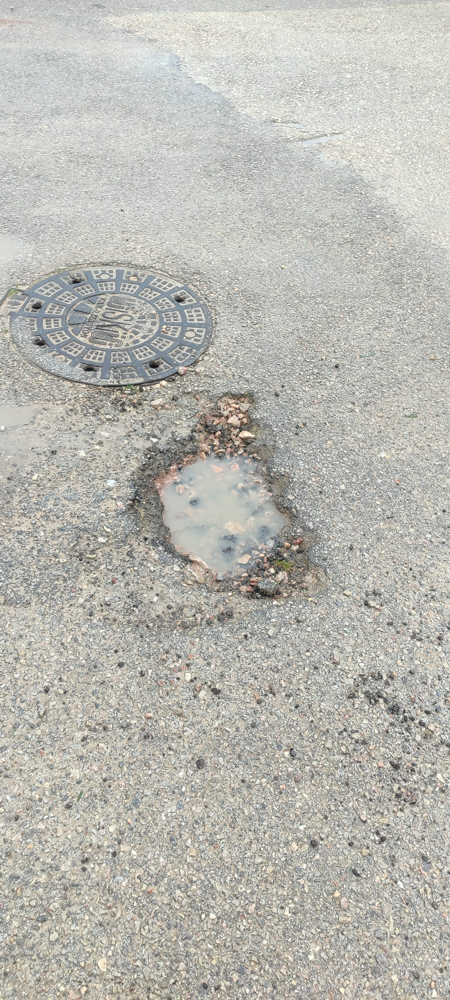
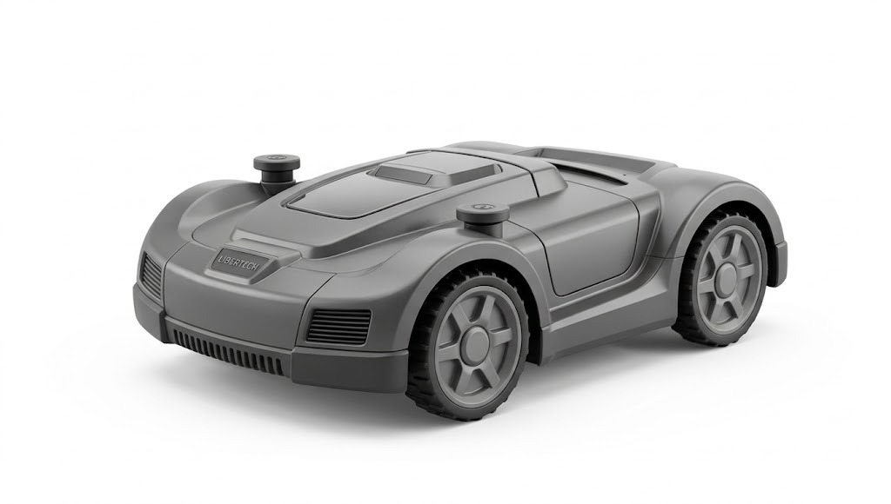
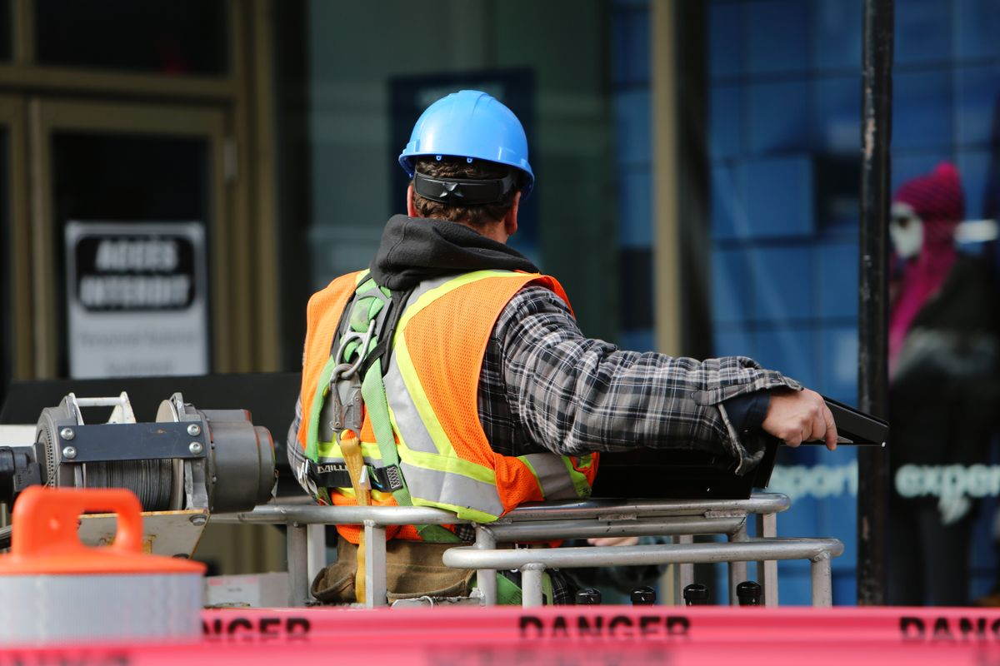

Yazılım Çözümleri
İhtiyacınıza Göre Teknoloji Üretiyoruz
Libertech olarak, işletmenizin ihtiyaçlarına özel yazılım çözümleri geliştiriyor, dijital dönüşüm yolculuğunuzda güvenilir teknoloji ortağınız oluyoruz.
Hizmetlerimiz
Neler Yapıyoruz?
Görüntü İşleme
Kamera görüntülerini yapay zeka ile analiz ederek nesne tespiti, takip ve sınıflandırma çözümleri geliştiriyoruz.
Edge AI
Yapay zeka modellerini Raspberry Pi gibi edge cihazlara taşıyarak sahada bağımsız çalışan gerçek zamanlı akıllı sistemler kuruyoruz.
Robotik
Sensör ve mobil uygulama entegrasyonuna sahip, otonom hareket edebilen akıllı robotik sistemler tasarlıyor ve geliştiriyoruz.
Kestirimci Bakım
Sensör verilerini analiz ederek arızalar oluşmadan önce erken uyarı veren yapay zeka destekli bakım çözümleri sunuyoruz.
Otomasyon
Tekrarlayan iş süreçlerinizi otomatikleştirerek zaman kazandıran ve maliyeti azaltan özel otomasyon çözümleri geliştiriyoruz.
Chatbot
Web siteniz ve uygulamalarınız için 7/24 hizmet verebilen, yapay zeka destekli akıllı chatbot çözümleri tasarlıyoruz.
Projelerimiz
Neler Ürettik?

POTHOLE 0.83 ⇔ Sürükleyerek İnceleYol Çukur Tespiti Sistemi
YOLO tabanlı yapay zeka ile yol çukurlarını gerçek zamanlı tespit eden sistem. Raspberry Pi ile edge cihaza, Flutter ile mobil uygulamaya dönüştürüldü.
Halısaha İstatistik Analiz Sistemi
Halı sahada 4-6 kamera ile oyuncuların koşu, pas, asist ve gol istatistiklerini maç sonunda raporlayan yapay zeka sistemi.

ÇİMBOT - Akıllı Çim Biçme Robotu
GPS ile bölge tanımlayan, engel algılayan ve mobil uygulamadan kontrol edilen otonom çim biçme robotu.

HELMET 0.91 ⇔ Sürükleyerek İnceleKKD - Baret Tespit Sistemi
Şantiye ve fabrika ortamlarında kamera görüntülerinden çalışanların baret (kişisel koruyucu donanım) kullanımını gerçek zamanlı tespit eden yapay zeka sistemi.
Üretim Bandı Sayım Sistemi
Üretim hattındaki ürünleri kamera ile tespit edip sayan, anlık üretim adedini ve hızını raporlayan yapay zeka destekli sayım sistemi.
İletişim
Bizimle İletişime Geçin
Adres
Bursa / Nilüfer
Telefon
0542 443 30 25
E-posta
info@libertech.com